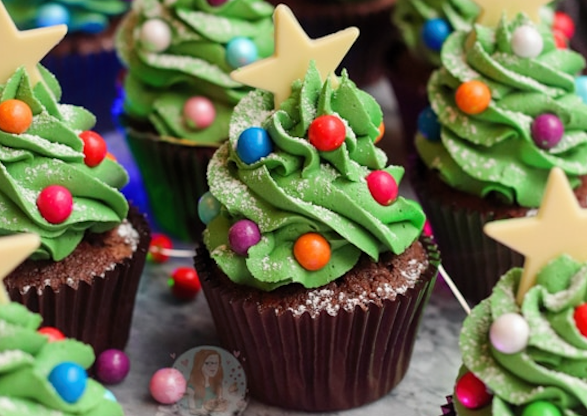

Christmas Tree Cupcakes!
NOVEMBER 27, 2021 by Jane
Delicious and easy Christmas Tree Cupcakes with a chocolate cupcake base, vanilla buttercream frosting, and cute Christmas tree style decoration! It’s been a while since I had so much fun baking some cupcakes. Honestly, these are my most favourite cupcakes in a long time, so I hope you all love them as much as I do! JUST LOOK AT THEM! They are little Christmas trees!!  I wanted to do something that would be a fun bake for everyone this time of year, but something that is still quite easy, and basically using what you will all already have in your cupboards – cupcakes are always the most straightforward idea, and I just really do love a good cupcake. I went for a chocolate cupcake because I wanted it to be brown like the ground – I wanted it to be ‘dirt’ – for the tree to sit on! You could argue it also represents the stump of the tree, but that’s entirely up to you. I just really like chocolate cupcakes okay… I went for a classic chocolate sponge that I use in so many of my cupcake recipes, but you can use my chocolate fudge cupcakes base if you want something a little more indulgent – you will need to stick to this decoration though! I used some standard brown muffin cases for my cupcake cases this time as I didn’t want the cases to distract from the decoration – but that is entirely up to you. With a simple 5 ingredient cupcake mix, they are so easy to bake and make that you will have no problems! For the decoration, it’s obvious what it is meant to represent – a Christmas tree! I used my favourite 2d closed star piping tip as always because I just adore the swirl that it creates on the cupcake. I purposefully pipe slightly more towards the middle of the cupcake so you can see some of the sponge underneath, and then it also makes the buttercream taller!
Ingredients
- 200 g unsalted butter/stork
- 200 g light brown soft sugar
- 150 g self raising flour
- 50 g cocoa powder
- 4 medium eggs
- 1 tsp vanilla extract
Instructions
Cupcakes
- Preheat the oven to 180ºc/160ºfan and prep 12 cases.
- Beat the unsalted butter/stork and light brown soft sugar together until light and fluffy.
- Add in the self raising flour, cocoa powder, eggs and vanilla extract.
- Beat the mixture until its thick and lovely.
- Split the mixture evenly between the 12 cases and bake in the oven for 20-22 minutes.
- Once baked, leave to cool fully.
Archives
Elsewhere